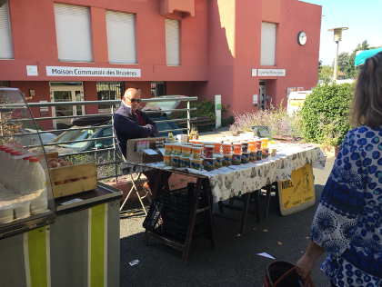

なぜAgrlienに入ったか…６
2020.08.01 よっすー
フランスのマルシェに憧れて
ワクワクしながら考えた休学計画も虚しく、慌ただしく就職活動をしているよっすーです。
なかなか思うように動けない日々が続いていますが、私は地元・茨城のイチゴ農家で収穫やパック詰めのアルバイトをしています。時給は東京駅で働いていた頃の1300円から850円になりましたが、自転車出勤で運動もできるし他のパートさんとのおしゃべりも楽しいしで、なんだかんだ今の方が良いかもしれません。
--------------------------------------------------------------------------------------------------------
さて、本題の「Agrlienに入った理由」について話します。
まず、私はとにかく食べることが大好きです。生きるために食べているのか、食べるために生きているのかもはや分かりません。高校生の頃、帰宅後の第一声は「ただいま」ではなく「今日のごはん何？」でした（笑）
そんな食いしん坊の私が大学進学で上京してきたのは3年前。東京のスーパーには地元産の野菜がたくさん置いてあるのですが、私はそこで漠然とした違和感を感じました。
例えば、地元のスーパーでレンコンを買った次の朝、冷たい水に浸かりながら収穫していた農家さんの横を自転車で駆け抜けながら「レンコンをありがとう」と心の中で呟いていました。高校生の心は純粋ですね。
もちろん昨日私が食べたレンコンは、今朝の農家さんが作ったものではありません。ここで私が言いたかったのは、田畑が身近にある田舎とは違って、都心に住んでいると生産現場との繋がりを感じにくいということです。
「川の手前の農家さんの白菜、だいぶ育ってるけど大丈夫なのかな」「無人販売の栗、今年もそろそろ出てくるかな」「そろそろ田植えが始まるよね」なんていう会話も、近くに田畑があったからこそ生まれるものだ
と気付かされました。
そこで、東京を拠点に農作物の生産現場と関わることのできる場を求め、某サークル情報サイトで「農業」というキーワードを入れたところ、出てきたのが「東京大学Agrlien」でした。いくら都会に馴染んでも、田舎者は土が恋しくなる運命なのですね。（馴染めているのかは分かりませんが。）
そして入会の決め手となったのは、活動の一つにマルシェがあったことです。
私は大学でフランス語を学んでいるのですが、フランス・リヨンに住むフランス人の家に2週間ほど滞在させてもらう機会があり、その時に連れて行ってもらったMarchéの素敵な雰囲気に一瞬で魅了されてしまいました。
野菜をカゴに入れてセルフレジに通すお買い物の味気ないこと！
作った人は自分の商品を自慢気に語り、買う人は「一番美味しい野菜を選んで」「ヤギのチーズを100g, s’il vous plaît」なんて言いながら、野菜やチーズ、お肉に魚、ハチミツやワインまで、美味しそうな食べ物で素敵なカゴバッグをいっぱいにして帰るのです。

△強面おじさんおすすめのハチミツを2種類購入しました
あの素敵なマルシェが日本で、しかも生産者側として出店できるなんて！C’est magnifique！
そんなフランスのマルシェへの憧れを胸に、Agrlienの門を叩きました。
以上、
①食べることがとにかく好きなこと
②田舎の土が恋しくなったこと
③フランスのマルシェに憧れていたこと
の3つがAgrlienに入った理由です。
「食いしん坊でフランスかぶれの田舎者」をイメージして頂ければ良いかと思います。
Agrlienに入ってからの活動についてはまたお話しする機会があると思うので、今回はこの辺で。
よっすー